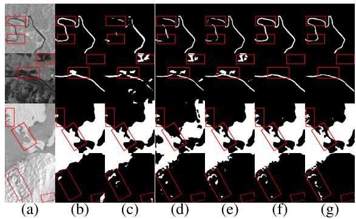

WaveMamba: A Directional Wavelet Decoder for Water Body Detection in SAR Imagery
Overview
WaveMamba addresses water-like background interference and fragmented river boundaries in SAR imagery. The model combines spatial features with frequency-domain information to recover boundary details while modeling global water structures.
Method
- Direction-aware wavelet decoder: separates features into frequency subbands and refines high-frequency boundary details with direction-aligned filters.
- Weighted Mamba modeling: models long-range structural dependencies in the low-frequency subband through weighted scanning streams.
- Cross-subband feature fusion: recalibrates subband features before spatial reconstruction.

My Contribution
I independently completed the method design, implementation, experimental validation, and manuscript writing. I am a co-first author (with my research mentor), listed second in the author list.
This work is an outcome of the university-level undergraduate innovation project that I lead. My responsibilities include algorithm development, environment setup, model training and testing, comparative experiments, and ablation studies.
Qualitative Results
Experiments on ALOS PALSAR and Sentinel-1 examine the segmentation of narrow rivers and larger water bodies under complex background conditions.

Reference
Bin Han, Fengyi Li, Hongqing Du, and Weiyuan Zhan. “WaveMamba: A Directional Wavelet Decoder for Water Body Detection in SAR Imagery.” IEEE Geoscience and Remote Sensing Letters, vol. 23, 2026, Art. no. 1505305. DOI: 10.1109/LGRS.2026.3735322.